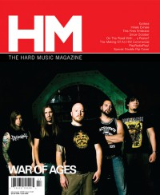

CMnexus
: Contemporary Christian culture, music, and media.
|
War of AgesOn the cover
July 2008
HM | Media coverage:- Nov 2006 in HM "War of Ages", by Timothy Gerst
- Win 2006 in Uprise Zine "Featured Bands: War of Ages"
- Spr 2007 in Uprise Zine "War of Ages "Strength From Within" video"
- Oct 2007 in CCM "New Noise: War of Ages", by Andrew Schwab
- Jul 2008 in HM "Dependent Toughness", by Doug Van Pelt
- Mar 2010 in HM "Hardnews: War of Ages", by Daniel Garcia
- Jul 2010 in HM "Live Report: The Powerless Rise Tour", by Jeff Cunningham
- Sep 2010 in HM "Street Team Report: War of Ages", by Jason Laughinghouse
- Nov 2010 in HM "Poster: War of Ages"
- Jan 2011 in Heaven's Metal "Metal Tracks: Concert Review: The National, Richmond, VA, May 6th, 2010", by Jeff McCormack
- Mar 2012 in HM "Hardnews: Quick & Concise: New Album: Return to Life"
- Apr 2012 in HM "War of Ages", by Rob Shameless
- Jul 2014 in HM "Titans of Time", by Sean Huncherick
Albums & reviews:2006: Pride of the Wicked
2023: Dominion
|
|
<>